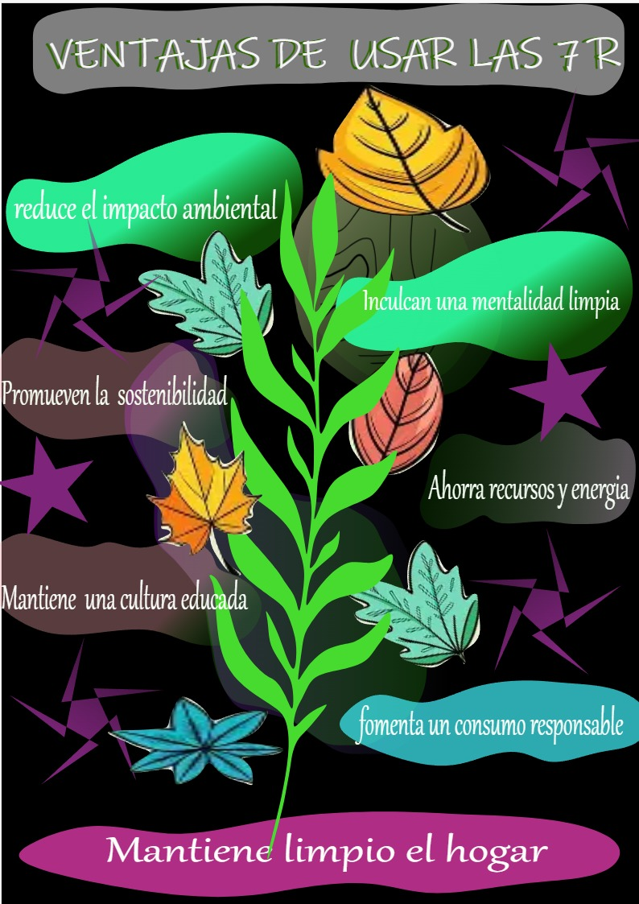

|
COMO FUNCIONAN 1. Rediseñar 👉 "Haz las cosas bien desde el inicio, w. Si vas a inventar algo, que no termine contaminando medio planeta. Piensa tantito kabron" 2. Reducir 👉 "No necesitas 8 botellas de shampoo ni 15 pares de chanclas. Compra menos y mejor da la pension de tus chamacos. Tu economia y familia te lo agradeceran." 3. Reutilizar 👉 "Antes de tirar la tapa de la coca, mejor donala los niños con cancer JAJAJAJAJAJAJAJAJAAJJA." 4. Reparar 👉 "No tires la licuadora solo porque hace ruidos, DALE UN PTAZO Y JALA." 5. Renovar 👉 "Tu escritorio todavia aguanta w, solo pintalo como el juan pinta sus tenis." 6. Recuperar 👉 "si se te rompio el cel fue por w, pero quitale la bateria por que todavia sirve." 7. Reciclar 👉 "separa la basura donde debe de ir w." |
 |
¿PA QUE SIRVEN LAS 7 R W?
Pa’ que no sigas llenando el mundo de basura. – tira paro w Pa’ ahorrar varo. – Reusar, reparar y reducir te dejan más varo para una burguer kike. Pa’ que tus cosas vivan más que tu dignidad w – En vez de botarlas al primer pdo, dales otra oportunidad. Pa’ que no nos alcance el relleno sanitario w. – me va a terminar consumiendo la basura w Pa’ usar lo necesario. – si sirve pa que compras otra cosa w. Pa’ quedar bien con la sociedad w. – que te vean y digan, "a no mms ese w si cuida al planeta...", na puro chile JAJAJAJAJJAAJAJJJAAJAJ. Pa’ que no aumente el maldito calor. – me suda hasta la cola kbron. |
IMPACTO DE LAS 7 RPaginaEntrar |
TOP PODCAST ECOLOGICOSPaginaEntrar |